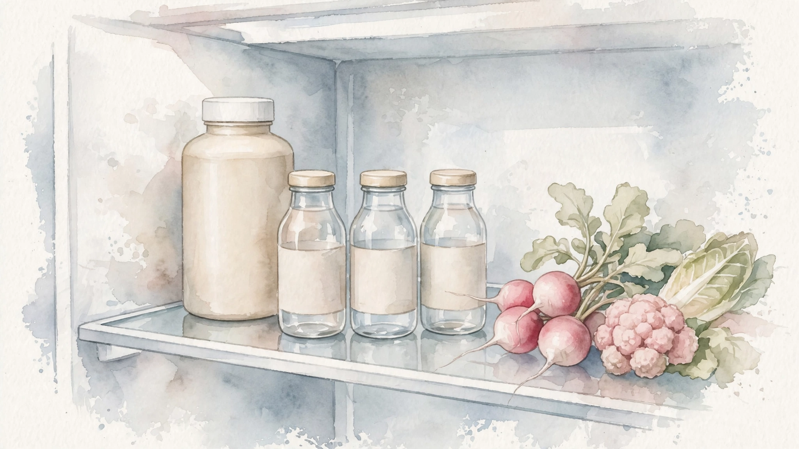
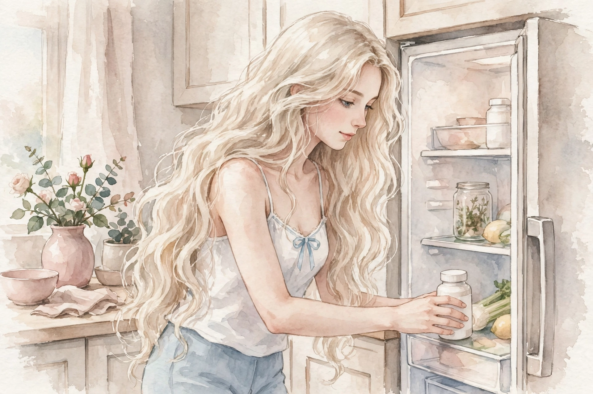

トップ ＞ インナーケア・サプリ ＞ 『冷蔵庫で保管』の表示の見方
『冷蔵庫で保管』の表示の見方

サプリメントの中には、「冷蔵庫で保管してください」と表示されているものがあります。粒タイプにもドリンクタイプにも見られる表示です。この記事では、保管にまつわる表示の文言の違いと、冷蔵庫で保管する場合の置き場所の考え方を整理します。
保管表示には、文言の種類がある
保管の表示は、大きく分けて「要冷蔵（冷蔵庫で保管）」「冷暗所に保管」「高温多湿・直射日光を避けて常温で保管」といった文言があります。冷暗所は、直射日光の当たらない涼しい場所という意味で、冷蔵庫とは限りません。文言が違えば、求められる置き場所も違います。
まずは自分の商品の表示がどれなのかを確認してください。「冷やす方が長持ちしそうだから」という自己判断で冷蔵庫に入れるのではなく、表示の文言がその商品の前提です。温度の条件が数字で書かれている場合（○℃以下など）は、その数字もあわせて読みます。
冷蔵庫の中の置き場所
冷蔵庫に入れる場合も、置く場所には向き不向きがあります。ドアポケットは開閉のたびに温度が動きやすく、結露もしやすい場所です。表示で冷蔵が求められるものは、庫内の奥の方の、温度の安定した場所が向いています。また、においの強い食品の近くは避け、容器の蓋やキャップは都度しっかり閉めます。
ドリンクタイプなど家族の飲み物と見た目が近いものは、置く場所を決めて目印を付けておくと、取り違えを防げます。子どもの手の届く段に置かないことも、家庭では大切な確認点です。
出し入れと、外出先での扱い
冷蔵庫から出した容器は、室温との差で表面に結露がつくことがあります。飲む分を出したら、容器は速やかに冷蔵庫へ戻すのが基本です。長時間の出しっぱなしは、表示の保管条件から外れる使い方になります。
旅行や外出で持ち出す場合は、保冷バッグを使うかどうかを含め、表示の範囲で迷うときは販売者の窓口に確認できます。また、冷凍保存は、表示に案内がない限りしません。「冷やす」という言葉の幅の中で、表示に書かれた方法だけを選ぶのが、保管表示の読み方の基本です。
場所取りと、家族との共有ルール
冷蔵保管のサプリメントが増えると、冷蔵庫の中の場所取りも現実的な問題になります。専用の小さなケースにまとめ、置く段を家族と共有しておくと、食品と混ざらず、探す手間も減ります。ケースには商品名と開封日を書いたテープを貼っておくと、開封後の目安とも照らし合わせやすくなります。
まとめ買いをした場合は、未開封の分も表示の保管条件に従います。「冷蔵庫に入りきらないから常温で」という扱いは、表示の前提から外れます。買う量そのものを、冷蔵庫の置き場所と相談して決めることも、保管表示に沿った買い方です。表示は、買う量の判断にまで関わっているのです。
停電や冷蔵庫の故障といった場合の扱いは、時間や温度の条件によって判断が変わるため、自己判断せず販売者の窓口に相談してください。その際は、冷蔵庫が止まっていたおおよその時間と、庫内の様子を伝えておくと、窓口でも話が具体的になります。
冷蔵庫の置き場所を決めたら、家族にも共有してください。食品と間違えて処分されたり、子どもの手に渡ったりしないよう、専用ケースと置く段の約束が役立ちます。目印のテープに商品名を書いておく方法も有効です。
冷蔵が必要なタイプと常温でよいタイプが混在している家庭では、棚を分けて管理します。冷蔵庫の扉を開けるたびに目に入る場所に常温のものを置かない、といった小さな仕分けが、保管条件の守りやすさにつながります。保管の表示は、買ったときに一度読めば、後は置き場所の習慣が支えてくれます。

セラフィナ「冷蔵庫に入れるかどうかは、表示の一文で決まるんだね」